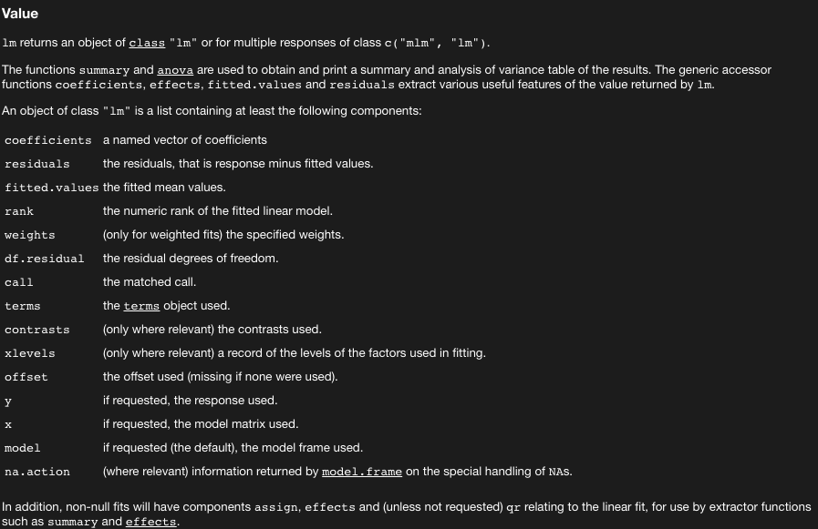

In S3 we create an a new S3 object with structure and giving our object some class
new_classy_boi <- function(x = double(), clothes = character()) {
stopifnot(is.double(x))
stopifnot(is.character(clothes))
structure(x,
class = "boi",
clothes = clothes)
}generic functions functions like mean or summary which work on a range of different types
method the way that summary works on a numeric vs a data.frame
library(palmerpenguins)
summary(penguins$species)## Adelie Chinstrap Gentoo
## 152 68 124summary(penguins$flipper_length_mm)## Min. 1st Qu. Median Mean 3rd Qu. Max. NA's
## 172.0 190.0 197.0 200.9 213.0 231.0 2summary(penguins)## species island bill_length_mm bill_depth_mm
## Adelie :152 Biscoe :168 Min. :32.10 Min. :13.10
## Chinstrap: 68 Dream :124 1st Qu.:39.23 1st Qu.:15.60
## Gentoo :124 Torgersen: 52 Median :44.45 Median :17.30
## Mean :43.92 Mean :17.15
## 3rd Qu.:48.50 3rd Qu.:18.70
## Max. :59.60 Max. :21.50
## NA's :2 NA's :2
## flipper_length_mm body_mass_g sex year
## Min. :172.0 Min. :2700 female:165 Min. :2007
## 1st Qu.:190.0 1st Qu.:3550 male :168 1st Qu.:2007
## Median :197.0 Median :4050 NA's : 11 Median :2008
## Mean :200.9 Mean :4202 Mean :2008
## 3rd Qu.:213.0 3rd Qu.:4750 3rd Qu.:2009
## Max. :231.0 Max. :6300 Max. :2009
## NA's :2 NA's :2Recall that methods are chosen from the available methods in a generic function like print and that we can look at the method choosen with sloop::s3_dispatch
my_fancy_boi = new_classy_boi(4,'socks')
sloop::s3_dispatch(print(my_fancy_boi))## print.boi
## => print.defaultprint(my_fancy_boi)## [1] 4
## attr(,"class")
## [1] "boi"
## attr(,"clothes")
## [1] "socks"Well that’s pretty ugly. Let’s make a better print method for our classy_boi
new_classy_boi <- function(x = double(),
clothes = character()) {
stopifnot(is.double(x))
stopifnot(is.character(clothes))
structure(x,
class = "boi",
clothes = clothes)
}
print.boi <- function(x) {
clothes <- attr(x, "clothes")
print(glue::glue("I have {x} {clothes}.\n OOO so fancy!!!"))
invisible(x)
}
my_fancy_boi = new_classy_boi(4,"socks")
sloop::s3_dispatch(print(my_fancy_boi))## => print.boi
## * print.defaultprint(my_fancy_boi)## I have 4 socks.
## OOO so fancy!!!What would a constructor function for lm objects, new_lm(), look like? Use ?lm and experimentation to figure out the required fields and their types.
First questions to ask ourselves,
What are the attributes in an lm object?
attributes(lm(body_mass_g ~ bill_depth_mm, data = penguins))## $names
## [1] "coefficients" "residuals" "effects" "rank"
## [5] "fitted.values" "assign" "qr" "df.residual"
## [9] "na.action" "xlevels" "call" "terms"
## [13] "model"
##
## $class
## [1] "lm"What kind of things are those?
?lm
What rules do we want for our constructor? The constructor should follow three principles:
Be called new_myclass().
Have one argument for the base object, and one for each attribute.
Check the type of the base object and the types of each attribute.
new_lm <- function(
coefficients, residuals, effects, rank, fitted.values, assign,
qr, df.residual, xlevels, call, terms, model
) {
stopifnot(
is.double(coefficients),
is.double(residuals),
is.double(effects),
is.integer(rank),
is.double(fitted.values),
is.integer(assign),
is.list(qr),
is.integer(df.residual),
is.list(xlevels),
is.language(call),
is.language(terms),
is.list(model)
)
structure(
list(
coefficients = coefficients,
residuals = residuals,
effects = effects,
rank = rank,
fitted.values = fitted.values,
assign = assign,
qr = qr,
df.residual = df.residual,
xlevels = xlevels,
call = call,
terms = terms,
model = model
),
class = "lm"
)
}S3 classes share behavior through the idea of inheritance
In S3 we have superclasses and subclasses
Example if we make an ordered factor with ordered
class(ordered("x"))## [1] "ordered" "factor"Here the superclass is factor and the subclass is ordered.
S3 will let you shoot yourself in the foot if you want, so be reasonable and impose some logic on making sub and superclasses
The base type of the subclass should be that same as the superclass.
The attributes of the subclass should be a superset of the attributes of the superclass.
During method dispatch, R will look through the object’s classes for the right methods
s3_dispatch(print(ordered("x")))## print.ordered
## => print.factor
## * print.defaultA method can delegate work by calling NextMethod(). s3_dispatch() reports delegation with ->.
s3_dispatch(ordered("x")[1])## [.ordered
## => [.factor
## [.default
## -> [ (internal)Let’s understand what the heck that just meant.
new_secret <- function(x = double()) {
stopifnot(is.double(x))
structure(x,
class = "secret")
}
print.secret <- function(x, ...) {
print(strrep("x", nchar(x)))
invisible(x)
}
x <- new_secret(c(15, 1, 456))
print(x)## [1] "xx" "x" "xxx"What happens when we try to index into our x with [?
x[1]## [1] 15Rats, we wanted to hide that information.
Let’s make a [.secret method
`[.secret` <- function(x, i) {
x <- unclass(x)
new_secret(x[i])
}
x[1]## [1] "xx"But this is kind of inefficient, as we’re making a copy of x.
We use the NextMethod() which will delegate to the next method??
`[.secret` <- function(x, i) {
new_secret(NextMethod())
}
s3_dispatch(x[1])## => [.secret
## [.default
## -> [ (internal)Here the actual work of indexing is done by the [ (internal) but because we’re creating the result back into a new_secret object, we mantain our secret class and we don’t waste creating a copy of x.
subclassesIf we want to allow for subclasses, our parent constructor needs to have ... and class arguments.
new_classy_boi <- function(x = double(),
clothes = character(),
class = character(),
...) {
stopifnot(is.double(x))
stopifnot(is.character(clothes))
stopifnot(is.character(class))
structure(
x,
...,
clothes = clothes,
class = c(class, "boi")
)
}
new_super_classy_boi <- function(x,clothes, repetitions) {
new_classy_boi(x,
clothes = clothes,
class = "superclassyboi",
repeats = repetitions)
}
print.boi <- function(x) {
clothes <- attr(x, "rep")
cat(paste0("I have ", x, " ", clothes, ".\n OOO so fancy!!!"))
invisible(x)
}
print.superclassyboi <- function(x) {
clothes <- attr(x, "clothes")
repeats <- attr(x, "repeats")
for (i in 1:repeats) {
print(paste0("I have ", x, " ", clothes, ".\n OOO so fancy!!!"))
}
invisible(x)
}
my_fancy_boi = new_classy_boi(4,clothes = "socks")
my_even_fancier_boi = new_super_classy_boi(13,clothes = "hats",repetitions = 3)
print(my_fancy_boi)## I have 4 .
## OOO so fancy!!!print(my_even_fancier_boi)## [1] "I have 13 hats.\n OOO so fancy!!!"
## [1] "I have 13 hats.\n OOO so fancy!!!"
## [1] "I have 13 hats.\n OOO so fancy!!!"Back to the toy example
new_secret <- function(x, ..., class = character()) {
stopifnot(is.double(x))
structure(
x,
...,
class = c(class, "secret")
)
}
new_supersecret <- function(x) {
new_secret(x, class = "supersecret")
}
print.supersecret <- function(x, ...) {
print(rep("xxxxx", length(x)))
invisible(x)
}
x2 <- new_supersecret(c(15, 1, 456))
x2## [1] "xxxxx" "xxxxx" "xxxxx"`[.secret` <- function(x, ...) {
new_secret(NextMethod())
}
x2[1:3]## [1] "xx" "x" "xxx"`[.secret` <- function(x, ...) {
vctrs::vec_restore(NextMethod(), x)
}
x2[1:3]## [1] "xxxxx" "xxxxx" "xxxxx"